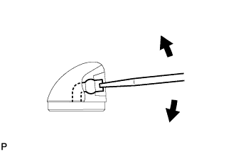

ФОРСУНКА СТЕКЛООМЫВАТЕЛЯ (заднего) > РЕГУЛИРОВКА
для подготовки
Нажмите здесь
1. ОТРЕГУЛИРУЙТЕ ФОРСУНКУ ЗАДНЕГО СТЕКЛООМЫВАТЕЛЯ В СБОРЕ

С помощью отвертки отрегулируйте направление форсунки заднего стеклоомывателя.
УКАЗАНИЕ:
Используйте отвертку с тонким лезвием толщиной приблизительно 1 мм (0,0394 дюйма).
ПРИМЕЧАНИЕ:
Не используйте английскую булавку или другие заостренные инструменты. Это может вызвать повреждение внутренней поверхности форсунки стеклоомывателя.